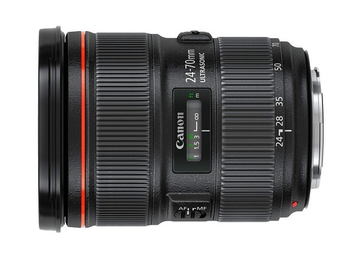

 覆盖24mm广角到70mm中远摄焦段的L级标准变焦镜头。F2.8的最大光圈在整个变焦范围内保持明亮，可应对风光、人像摄影等广泛领域。光学结构方面，有效配置了1片研磨非球面镜片和2片GMo（玻璃模铸）非球面镜片，高效补偿广角端容易产生的像面弯曲和彗星像差，实现了更高的画质。还配置了1片超级UD（超级超低色散）镜片和2片UD（超低色散）镜片，广角端画面边缘部分的倍率色像差和远摄端的轴向色像差都得到了良好补偿。整个变焦范围内都能得到锐利、清晰的画质。光圈结构采用9片叶片的圆形光圈，可以拍出符合大光圈镜头特点的柔和、大幅虚化效果。另外，变焦环等可动部分采用了防水滴防尘※结构。镜身部分的结构也得到强化，提高了耐振动、耐冲击性，长时间使用也可以保持高精度。在最前端和最后端镜片的外侧表面采用了憎油憎水性能优秀的防污氟镀膜，仅用镜头布擦拭即可轻松除去附着在镜片表面的皮脂等污垢。作为F2.8的大光圈变焦镜头，在实现镜头滤镜口径增加到82毫米的同时，还成功实现镜头的紧凑、轻量化，提高了拍摄时的机动性和便携性，镜身侧面搭载变焦环锁定杆，可防止在携带时意外拉伸镜头。
※本镜头虽然具有一定的防水滴性能，但是如果在雨天拍摄时，请尽量不要淋湿。
| 镜头焦距 | 24-70mm |
|---|---|
| APS-C画幅下的35mm规格换算焦距 *1 | 约38-112mm |
| 镜头结构 | 13组18片 |
| 光圈叶片 | 9片（圆形光圈） |
| 最小光圈 *2 | 22 |
| 最近对焦距离 | 约0.38米 |
| 最大放大倍率 *3 | 约0.21倍 |
| 驱动系统 | 环形USM超声波马达 |
| 手抖动补偿效果 | - |
| 滤镜直径 | 82毫米 |
| 最大直径及长度 | 约Φ88.5×113毫米 |
| 重量 | 约805克 |
光圈值：f/2.8
快门速度：1/2秒